3.1 首选项大全
首选项控制着 Fusion 的各种默认行为：语言、单位、鼠标习惯、图形显示……这一页把每个分类都打开看一遍，说明每一项是什么、要不要改。大部分保持默认就行，标了 ⭐ 的是值得看一眼的。
怎么打开#
点右上角头像 →「首选项」，或者 Mac 菜单栏「Fusion → 首选项」。左边是分类树，右边是设置项；改完点右下角「确定」或「应用」。左下角「恢复默认设置」可以一键还原当前分类。
不用全部看懂。新手只需要确认 1.0 里说的两项（Z 轴向上、单位 mm）。这一页是查阅用的：哪天觉得 Fusion“怎么默认是这样”，回来找对应的设置。

常规#
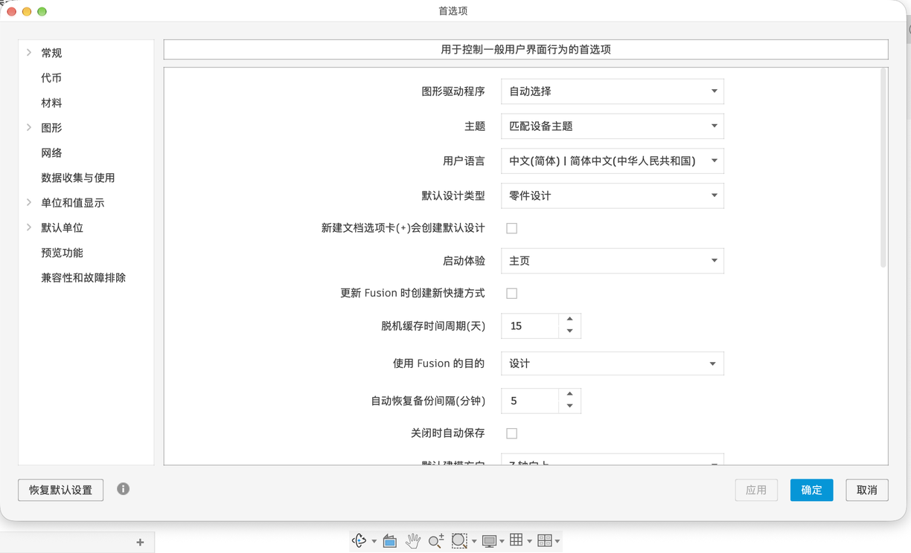
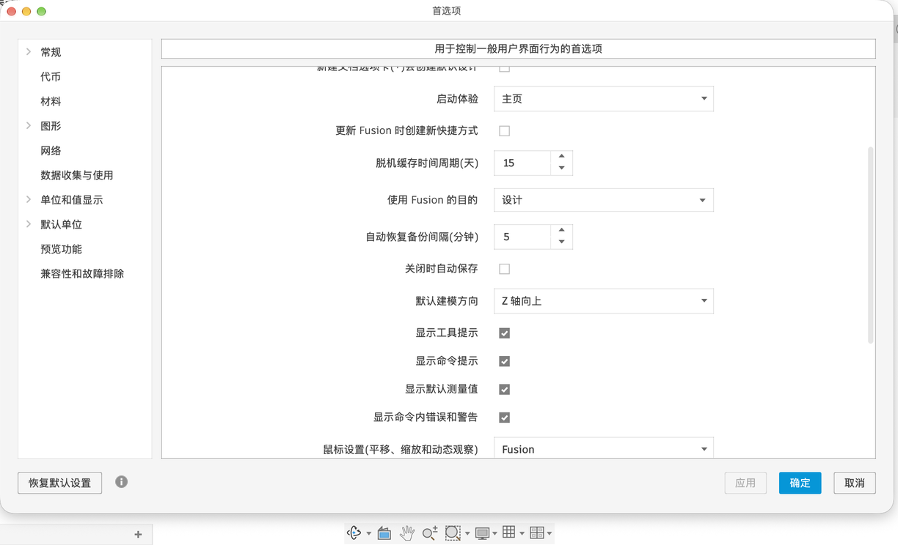
| 设置 | 含义 | 建议 |
|---|---|---|
| 图形驱动程序 | 用哪种方式调用显卡 | 自动选择 |
| 主题 | 浅色 / 深色 / 跟随系统 | 按喜好（本教程截图是浅色） |
| ⭐ 用户语言 | 界面语言，改完重启生效 | 中文（简体） |
| 默认设计类型 | 点「新设计」时默认选哪种 | 零件设计；做装配时手动选混合设计 |
| 新建文档选项卡（+）会创建默认设计 | 点文档选项卡的 + 号是直接新建，还是弹出选择窗口 | 按喜好 |
| 启动体验 | 打开 Fusion 先显示首页还是直接进设计 | 主页 |
| 脱机缓存时间周期（天） | 离线时能用多少天的本地缓存 | 15 |
| 使用 Fusion 的目的 | 设计 / 制造等，影响首页推荐内容 | 随意 |
| ⭐ 自动恢复备份间隔（分钟） | 隔多久在本机存一份“崩溃恢复”备份 | 5 |
| 关闭时自动保存 | 关闭文档时自动存到云端 | 按喜好 |
| ⭐ 默认建模方向 | Y 轴向上 / Z 轴向上 | Z 轴向上（和切片软件一致） |
| 显示工具提示 / 命令提示 | 鼠标停在按钮上弹出说明 | 新手保持勾选 |
| 显示默认测量值 | 选中对象时在右下角显示长度、面积 | 勾选 |
| 显示命令内错误和警告 | 对话框里直接显示出错原因 | 勾选 |
| ⭐ 鼠标设置（平移、缩放和动态观察） | 模仿哪个软件的鼠标习惯，默认 Fusion，下拉框里还有其他常见 CAD 软件的习惯 | 新手用 Fusion |
| 默认动态观察类型 | 受约束的（保持上下方向）/ 自由（可以翻过来） | 受约束的 |
| 反转缩放方向 | 滚轮往哪边是放大 | 按习惯 |
| 启用相机轴心 | 以鼠标位置为中心旋转 | 勾选 |
| ViewCube 大小 | 右上角视图立方体的大小 | 自动 |
| 使用基于手势视图导航 | 触控板手势 | 用触控板的人打开 |
| 空格键重复执行上一个命令 | — | 按习惯 |
API#
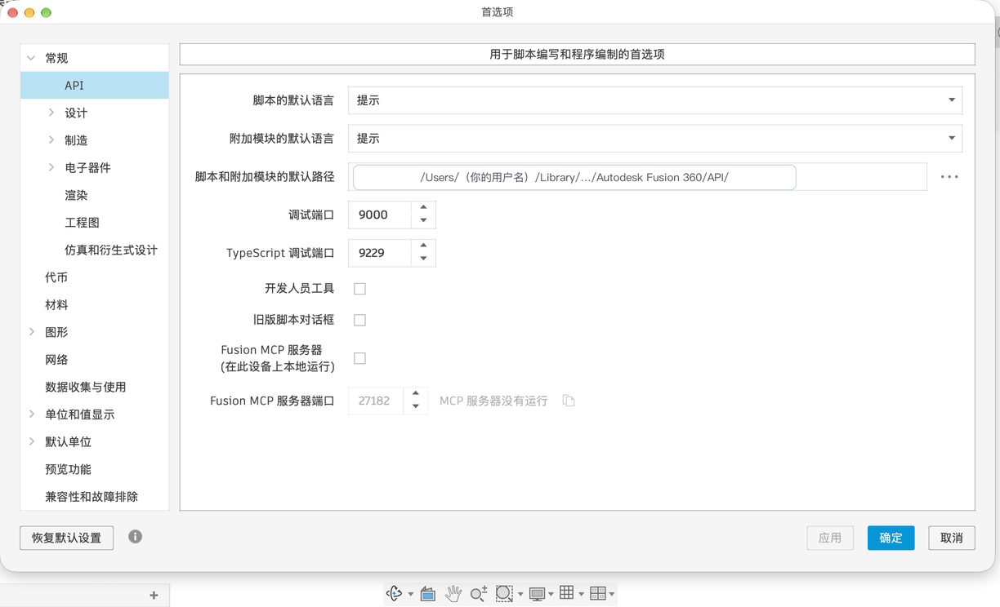
| 设置 | 含义 |
|---|---|
| 脚本的默认语言 / 附加模块的默认语言 | 新建脚本时用 Python 还是 C++。默认“提示”，就是每次新建时问你 |
| 脚本和附加模块默认路径 | 脚本存在电脑的哪个文件夹 |
| 调试端口 / TypeScript 调试端口 | 用 VS Code 调试脚本时用的端口，一般不用改 |
| 开发人员工具 | 开启后能用浏览器开发者工具查看 Fusion 里的网页面板 |
| 旧版脚本对话框 | 用回老版本的「脚本和附加模块」窗口 |
| Fusion MCP 服务器（在此设备上本地运行） | 勾选后，Fusion 在本机开一个 MCP 服务，电脑上的 AI 工具（比如支持 MCP 的聊天客户端）就能连上来，直接让 AI 读取或操作 Fusion。默认关闭。不用 AI 的话保持关闭 |
| Fusion MCP 服务器端口 | MCP 服务用的端口号（默认 27182），旁边显示服务有没有在运行 |
设计#
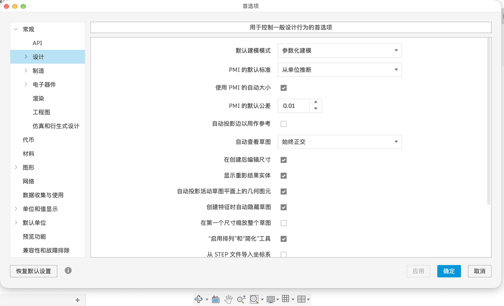
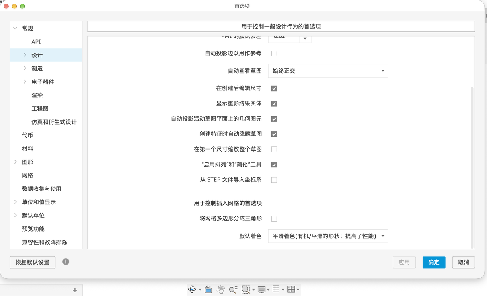
| 设置 | 含义 | 建议 |
|---|---|---|
| ⭐ 默认建模模式 | 参数化建模（有时间轴）/ 直接建模（没有时间轴） | 参数化建模 |
| PMI 的默认标准 / 自动大小 / 默认公差 | 在三维模型上直接标注尺寸、公差（PMI）的默认格式 | 默认 |
| 自动投影边以用作参考 | 草图里引用实体的边时自动投影 | 勾选 |
| 自动查看草图 | 新建草图时视角自动正对草图 | 勾选 |
| 在创建后编辑尺寸 | 标完尺寸立刻弹出输入框 | 勾选 |
| 显示重影结果实体 | 拉伸等命令里显示半透明的预览 | 勾选 |
| 自动投影活动草图平面上的几何图元 | 在零件的面上画草图时，自动把面的边投影进来 | 按习惯 |
| 创建特征时自动隐藏草图 | 拉伸完把草图藏起来 | 勾选 |
| 在第一个尺寸缩放整个草图 | 标第一个尺寸时，整个草图按比例缩放到这个尺寸 | 勾选（随手画的草图标第一个尺寸就变成大致正确的大小） |
| 从 STEP 文件导入坐标系 | 导入 STEP 时保留里面的坐标系 | 默认 |
| 插入网格：将网格多边形分成三角形 / 默认着色 | 导入 STL 时的处理 | 默认 |
制造 / 电子器件 / 渲染 / 工程图 / 仿真#
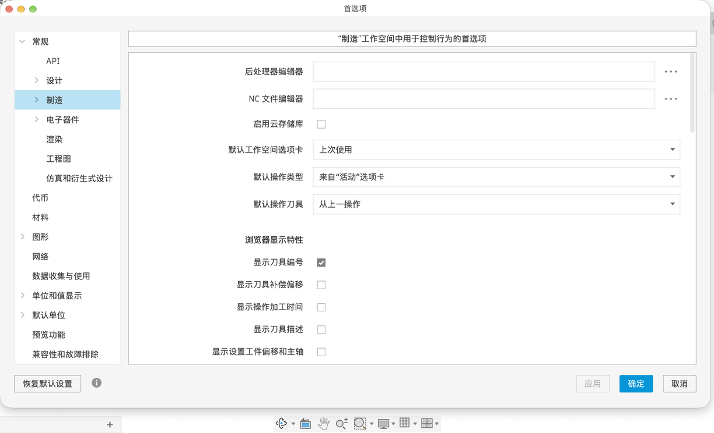
做 CNC 时再回来看（第 16 章）。
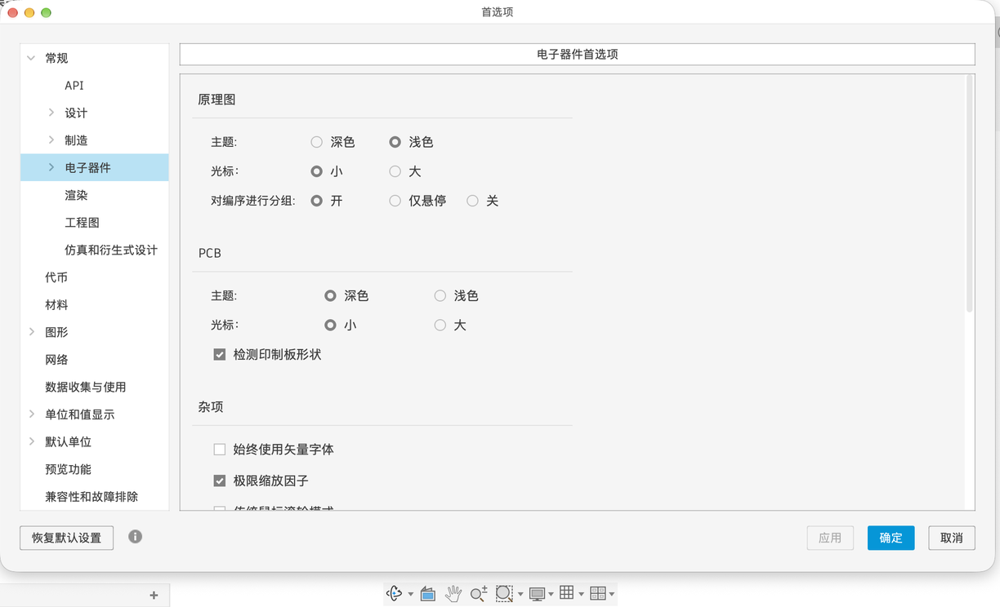
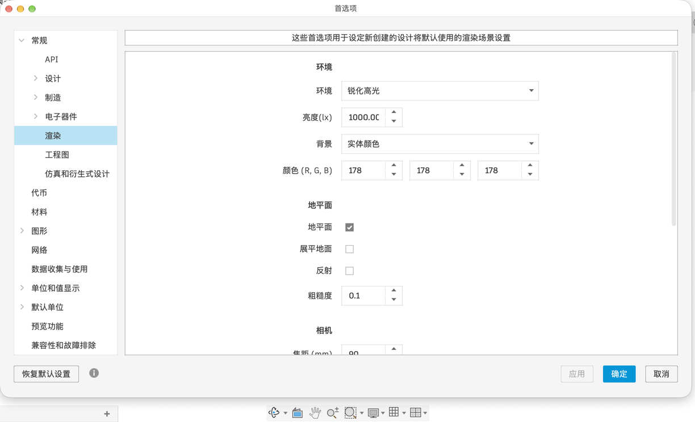
第 12 章。
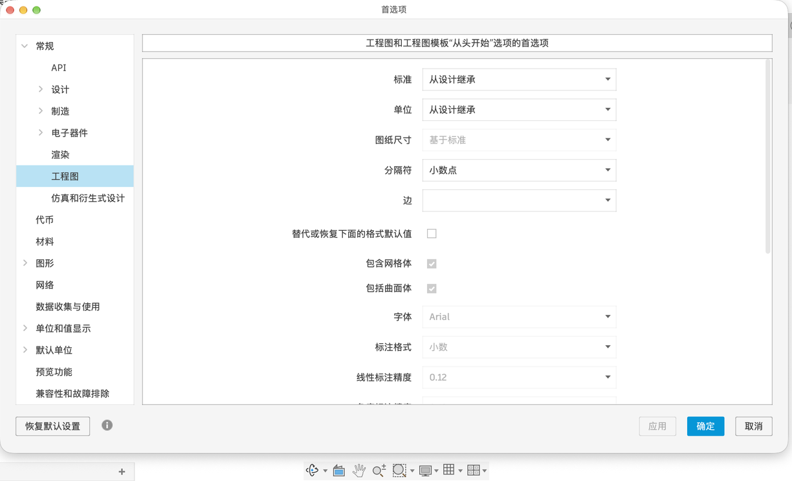
第 14 章。
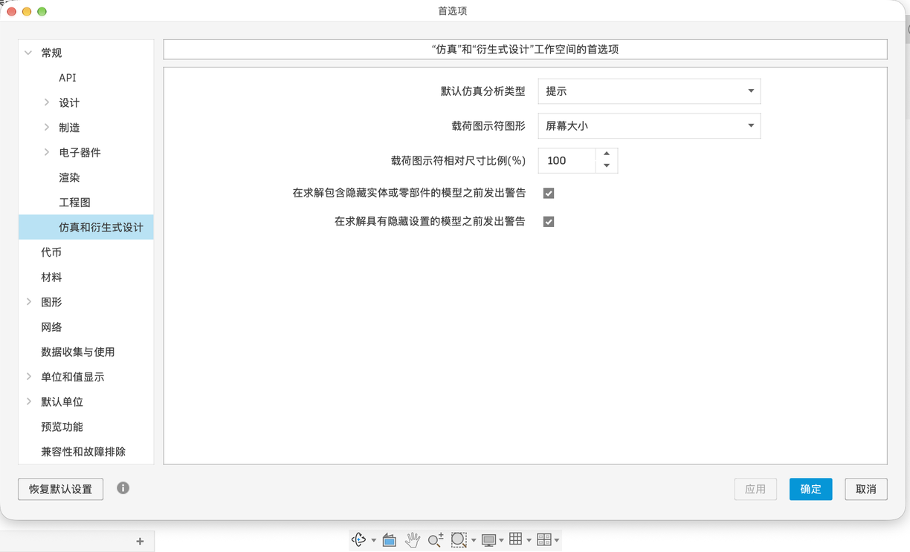
第 17 章。
代币、材料、图形、网络……#
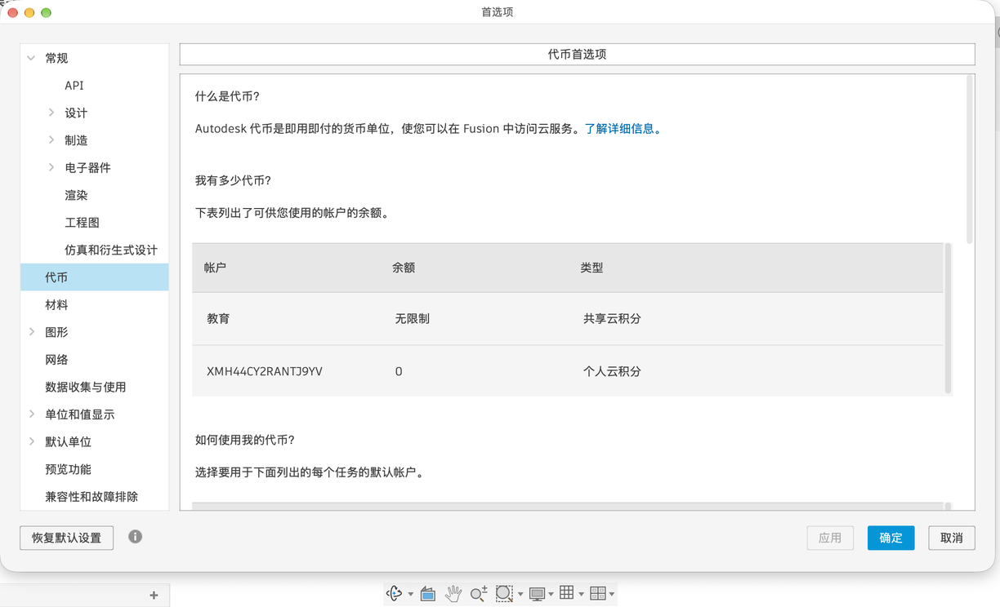
Autodesk 代币是按次付费的“点数”，用来支付云端计算。教育版的云积分不限量；个人版很多云功能不可用。
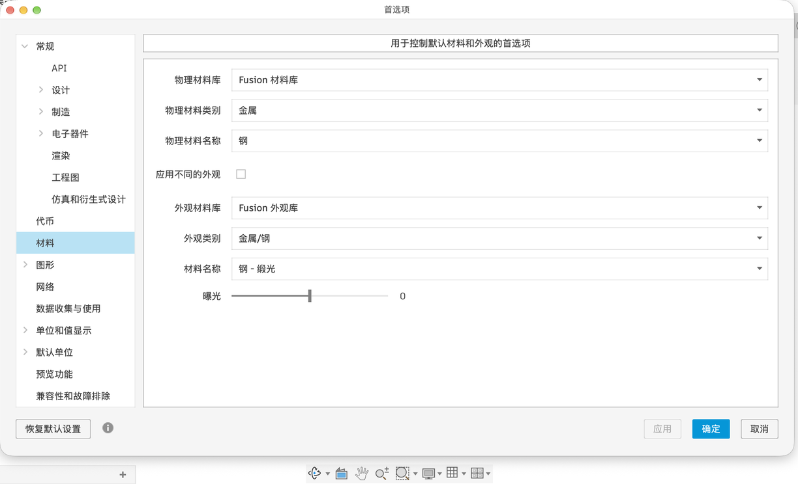
新建的实体默认是“钢”。做塑料件的话可以把默认物理材料改成 ABS 或 PLA，算重量更方便。
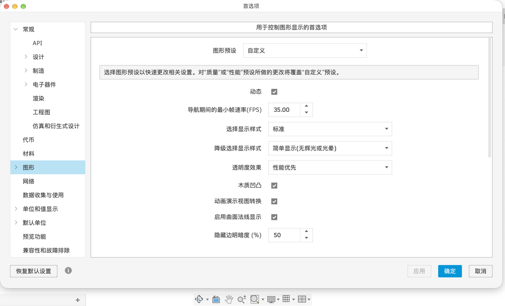
电脑卡的话把「图形预设」改成性能优先。
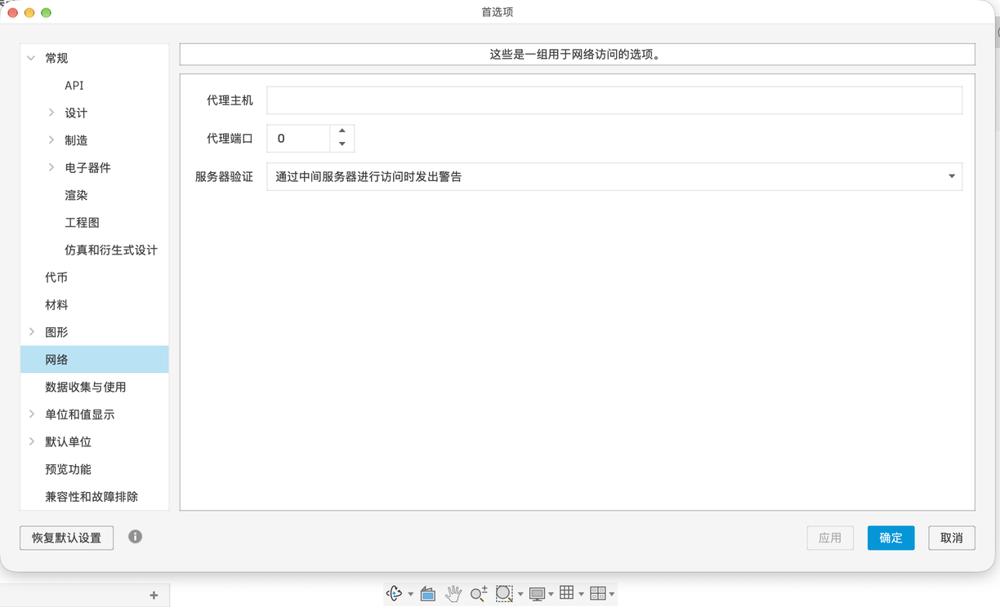
公司、学校网络需要代理时才填。
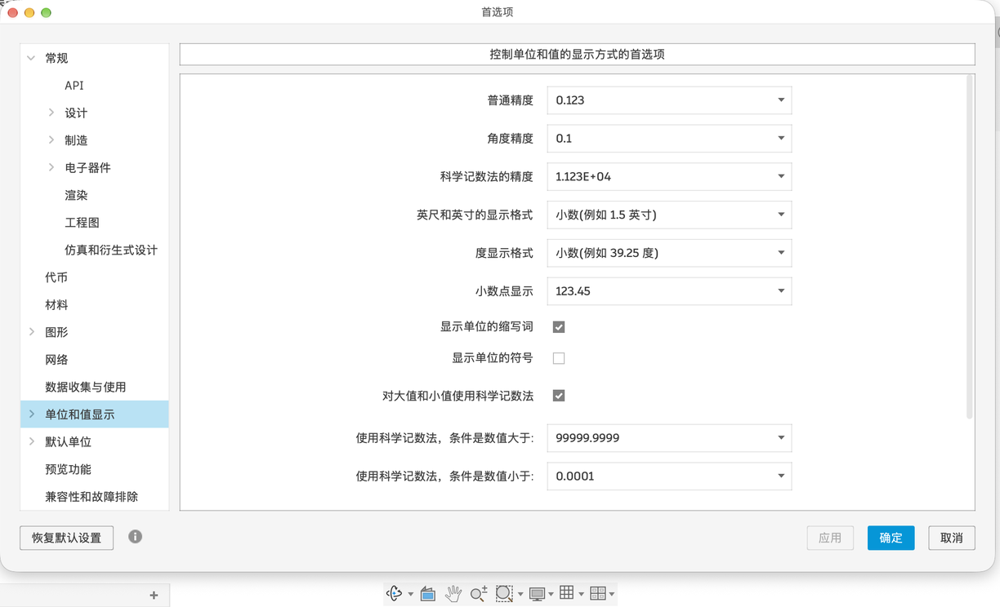
想让界面显示 3 位小数就改「普通精度」。注意：只改显示，不改实际尺寸。
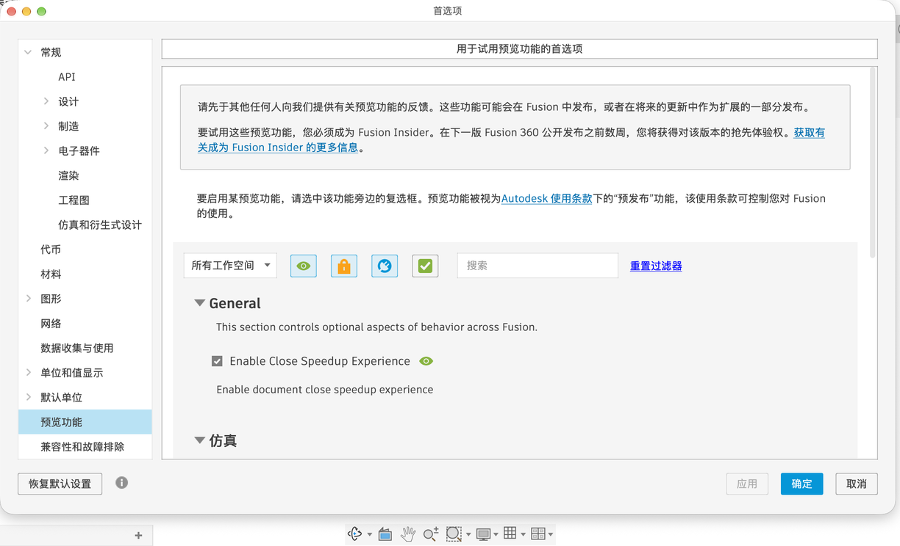
想尝鲜可以勾选，但可能不稳定。
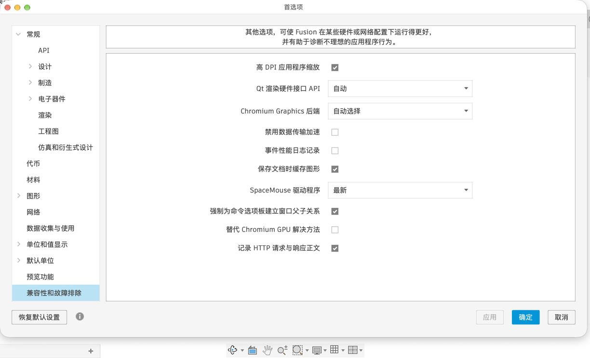
Fusion 显示异常、闪退时，官方客服可能会让你改这里的选项。平时不要动。
默认单位#
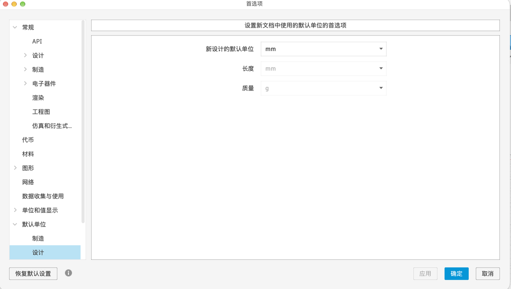
已经建好的设计改单位：浏览器 → 文档设置 → 单位，右键修改。改单位不会改变实际大小，只改显示（40 mm 改成英寸会显示 1.575 in）。